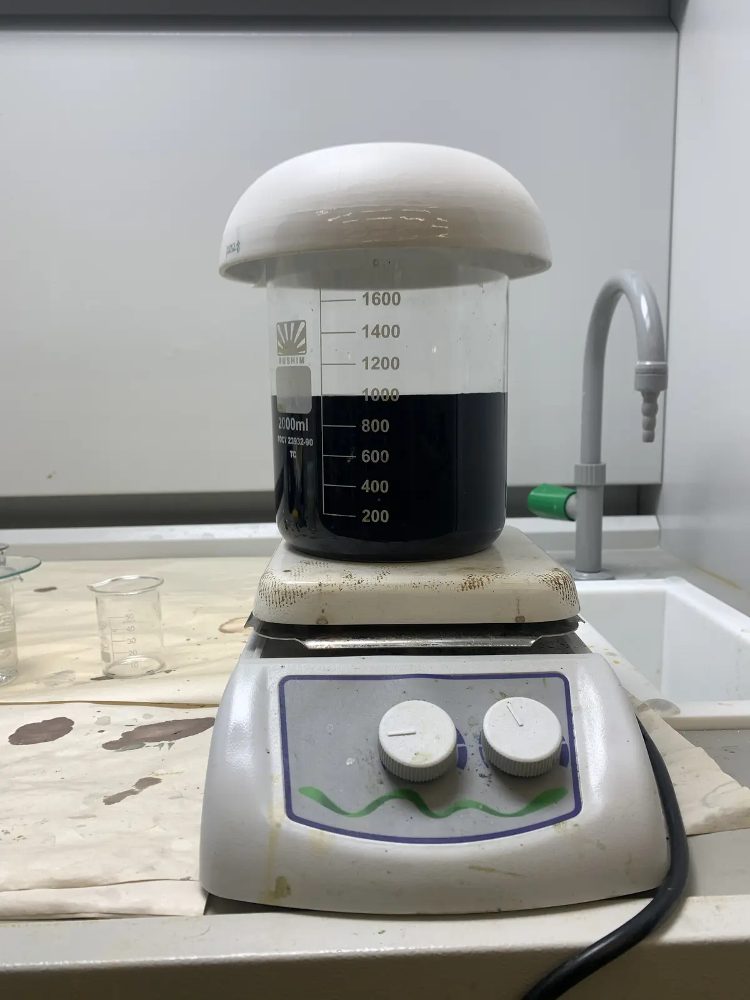
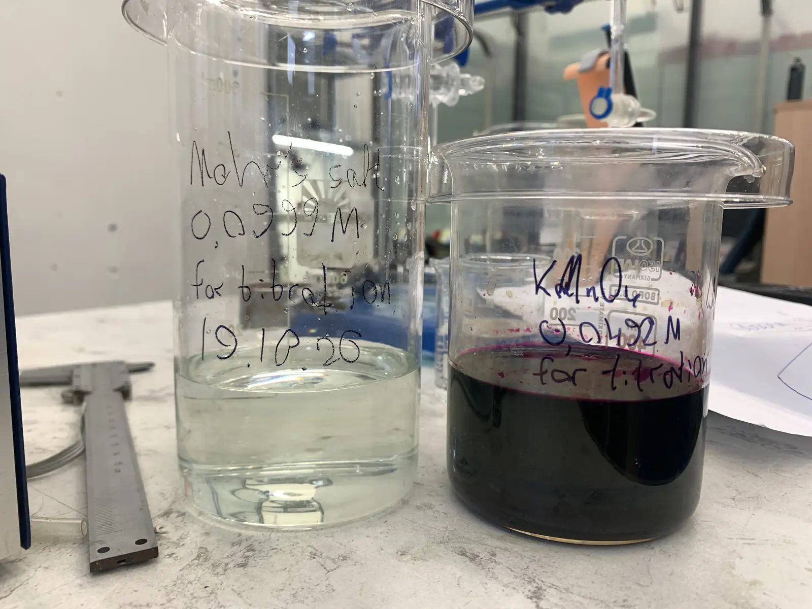
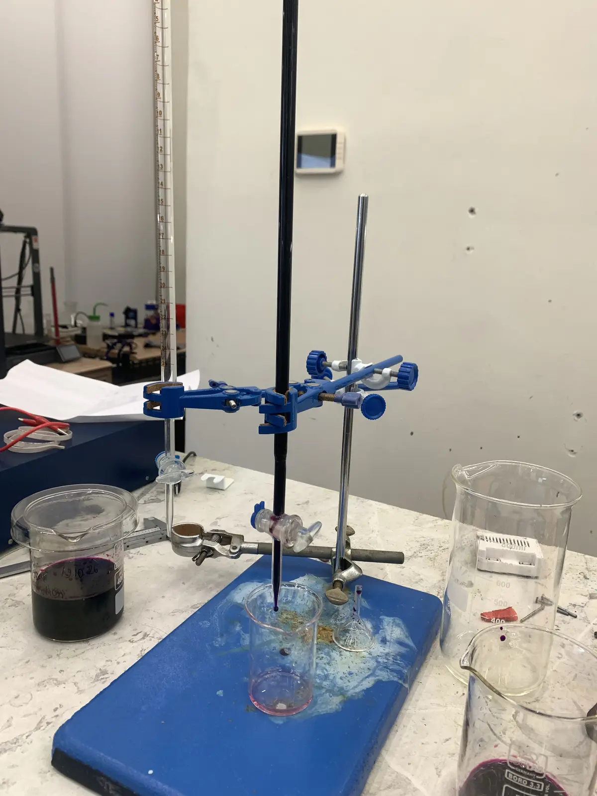
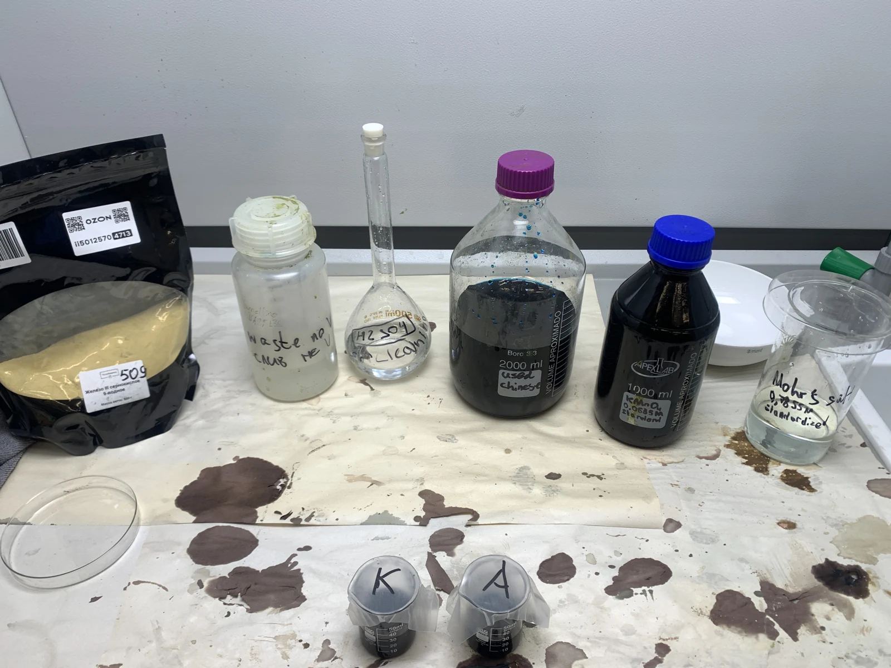
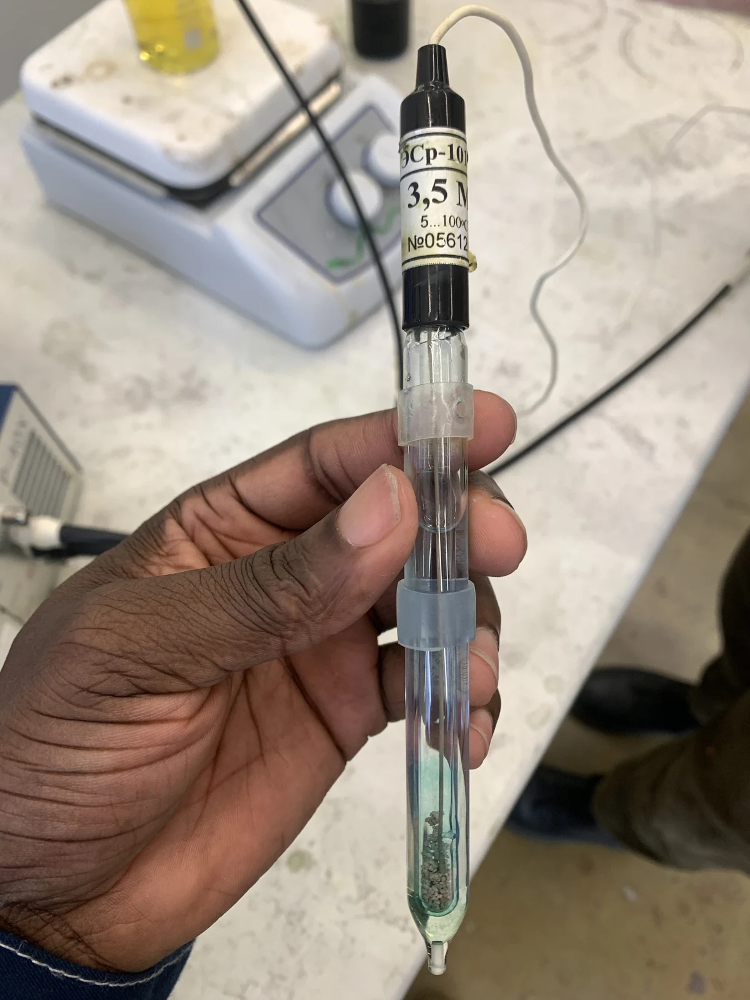
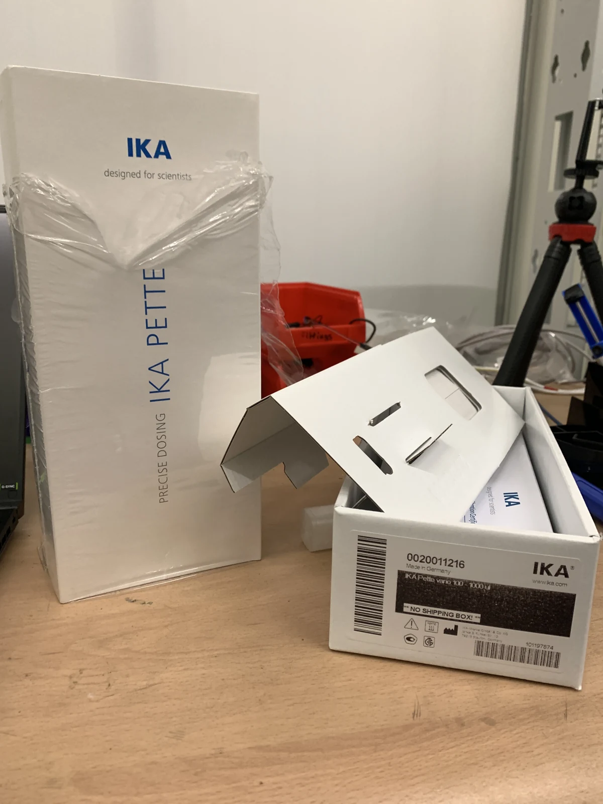
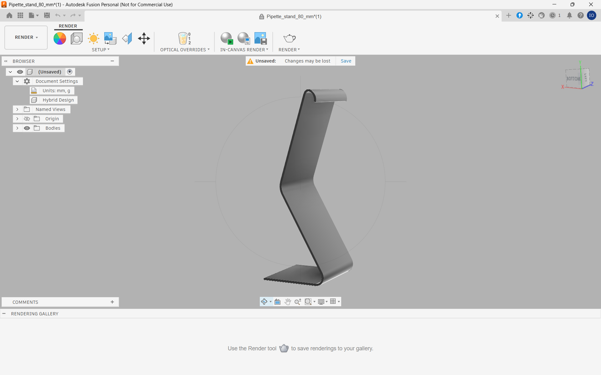
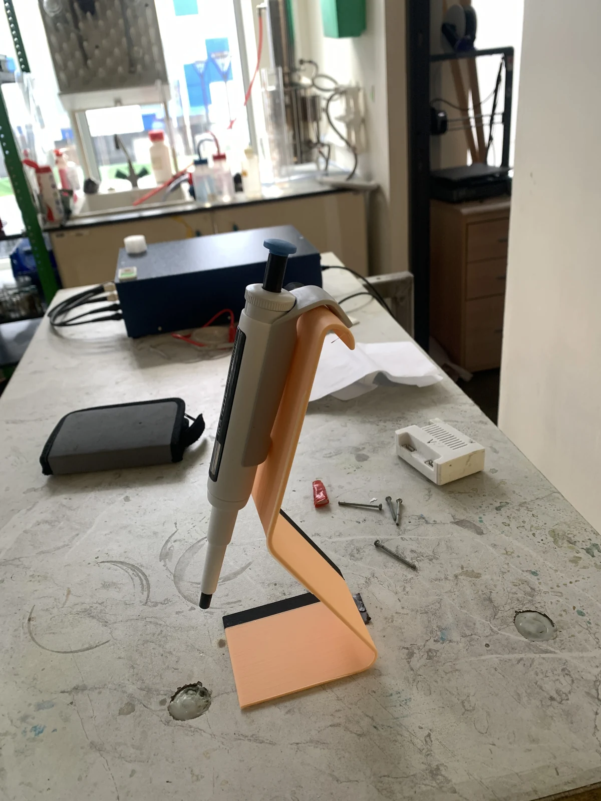

Research / Oxidation-state study
Understanding
the electrolyte.
Studying how vanadium oxidation state affects cycling, with chemical measurements as an independent reference for the electrical and optical signals.
First run complete
The first
ten-cycle run.
The first run of a ten-cycle experiment investigating vanadium oxidation states is now complete. Alongside the electrical measurements, cameras recorded electrolyte volume changes and colour sensors provided an additional optical signal.
We are comparing the electrical, optical and volume records with chemical analysis of the electrolyte. Titration provides an independent reference for checking the colour-based state-of-charge measurements. The first run is complete; combined analysis remains in progress.
Wet chemistry
Preparing a reference
for the electrolyte.
To check what the electrical and colour signals tell us, we need an independent chemical measurement of the electrolyte. We first prepared the two titrants: potassium permanganate as an oxidant, and Mohr’s salt as a source of reducing Fe²⁺.
Oxalic acid provides the primary standard for checking permanganate; Mohr’s salt is checked against that standardised oxidant. The visible endpoints are loss of the purple colour in the first demonstration and a persistent faint pink in the second.
The titrants have been standardised. Electrolyte analysis and consistency checks are ongoing; chemical results will be reported with the full analysis.






Potential-monitored titration
Adding an electrical
record of the endpoint.
We add measured amounts of titrant to a stirred sample and record the electrode potential once each addition settles. Jumps in the potential-versus-volume curve help locate equivalence points for the chemical calculation.
A platinum indicator electrode follows the redox reaction; the Ag/AgCl reference electrode provides a stable comparison potential.
Our procedure specifies permanganate oxidation followed in the same beaker by Mohr’s-salt back-titration, with immediate Fe(III) fixation for air-sensitive anolyte. The aim is an independent reference for validating colour-based state-of-charge measurements.




Planned series
Vary the electrolyte.
Keep the test consistent.
The next planned series compares six starting average oxidation states (AOS), from 3.5 to 4.0. Each run uses a fresh blend of two parent stocks, with equal electrolyte mass in each tank and the same flow rate and cycling programme. The plan calls for ten cycles per condition, with the first treated as formation.
Titration before cycling establishes the actual starting composition. After discharge, the two electrolytes are pooled and titrated again to track the change in average oxidation state. Using fresh blends avoids carrying used electrolyte from one condition into the next.
This is an experimental plan, not a completed six-condition dataset. Acidity changes with oxidation state in this design, so their effects cannot be separated; cell ageing across runs also needs an order check.
All clips play silently on a loop at 2× speed when in view. Use the controls to pause. Automatic playback respects reduced-motion preferences.
Instrumentation
Monitoring the run.
The experiment combines the cycler record with colour measurements and camera monitoring of electrolyte volume. The separate OCV and colour reader has its own project page.
Explore the reader and its buildSampling tools: the printed micropipette stand
CAD to printed hardware
A stand for
the micropipette.
I designed and 3D-printed a stand for our IKA PETTE vario 100–1000 µL micropipette. The pipette transfers measured small volumes for sampling and solution handling; the stand keeps it upright between uses.
IKA PETTE vario · device reference ↗





Progress
Where things stand.
Potential-monitored titration
Added a potential-versus-volume record to help locate equivalence points. A six-condition oxidation-state series is planned.
First ten-cycle run complete
Electrical, camera and colour records are available; their combined analysis and chemical reference measurements remain in progress.
Experimental phase begins
Started the ten-cycle experiment with camera monitoring and optical sensing.